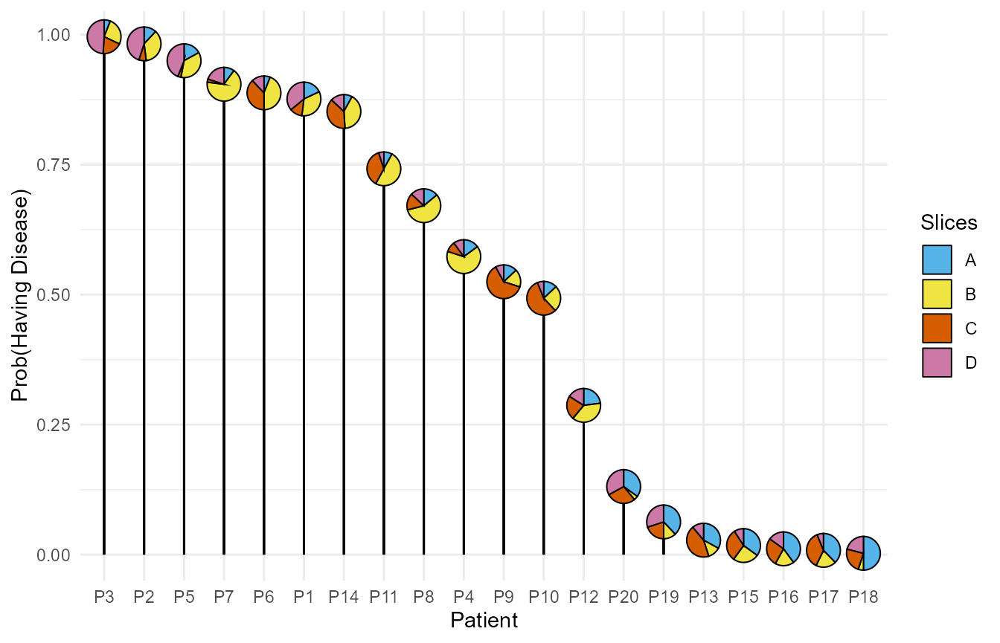

This example shows the use of PieGlyph package to create
lollipop plots where the centre of the lollipop is replaced by a
pie-chart showing proportion of different attributes.
The example is set up to showcase that even if the attributes to be shown in the pie-charts are not in proportions or percentages, the function would calculate those automatically. Further the attributes don’t always have to be in separate columns, they can also be stacked in one column with their corresponding values in another column.
Simulate fake data
model_data <- data.frame('ID' = paste0('P', 1:20),
'A' = c(90, 60, 30, 75, 85,
30, 50, 70, 65, 65,
40, 115, 165, 40, 175,
200, 185, 250, 190, 175),
'B' = c(170, 180, 130, 325, 180,
220, 335, 285, 85, 125,
250, 190, 60, 205, 125,
90, 95, 25, 60, 20),
'C' = c(60, 35, 95, 50, 15,
190, 15, 80, 310, 280,
185, 115, 220, 190, 155,
135, 180, 120, 100, 140),
'D' = c(180, 225, 245, 50, 220,
60, 100, 65, 40, 30,
25, 80, 55, 65, 45,
75, 30, 105, 150, 165),
'Disease' = factor(c(rep(c('Yes'), 10),
rep(c('No'), 10))))
The data contains proportions of four protein markers in the blood for
20 different patients. ID is a unique identifier for each
patients while columns A, B, C,
and D describe the scores of each patient across the four
markers and disease describes whether of not the patient
has a disease
head(model_data)
#> ID A B C D Disease
#> 1 P1 90 170 60 180 Yes
#> 2 P2 60 180 35 225 Yes
#> 3 P3 30 130 95 245 Yes
#> 4 P4 75 325 50 50 Yes
#> 5 P5 85 180 15 220 Yes
#> 6 P6 30 220 190 60 YesFit regression model
We fit a logistic regression model using the four protein markers as predictors for the probability of having the disease
The model summary shows that marker A is significant in
predicting the probability of having the disease.
summary(m1)
#>
#> Call:
#> glm(formula = Disease ~ A + B + C + D + 0, family = binomial(link = "logit"),
#> data = model_data)
#>
#> Deviance Residuals:
#> Min 1Q Median 3Q Max
#> -1.95542 -0.26818 0.00974 0.49409 1.18935
#>
#> Coefficients:
#> Estimate Std. Error z value Pr(>|z|)
#> A -0.035561 0.018041 -1.971 0.0487 *
#> B 0.005089 0.004897 1.039 0.2987
#> C 0.003451 0.005785 0.597 0.5508
#> D 0.022697 0.015913 1.426 0.1538
#> ---
#> Signif. codes: 0 '***' 0.001 '**' 0.01 '*' 0.05 '.' 0.1 ' ' 1
#>
#> (Dispersion parameter for binomial family taken to be 1)
#>
#> Null deviance: 27.726 on 20 degrees of freedom
#> Residual deviance: 13.221 on 16 degrees of freedom
#> AIC: 21.221
#>
#> Number of Fisher Scoring iterations: 6Model predictions
We can now predict the probability of a patient having the disease give their scores on the four protein markers.
After making the predictions, the data is sorted in descending order of the probability of having the disease. Further the marker columns are stacked together into one column.
plot_data <- model_data %>%
# Add predictions
mutate('prediction' = predict(m1, type = 'response')) %>%
# Sort in descending order of prediction
arrange(desc(prediction)) %>%
# Relevel ID for plotting in descending order
mutate(ID = fct_inorder(ID)) %>%
# Stack the four markers in one column
pivot_longer(cols = c('A', 'B', 'C','D'), names_to = 'Marker',
values_to = 'Proportion')
head(plot_data, 8)
#> # A tibble: 8 × 5
#> ID Disease prediction Marker Proportion
#> <fct> <fct> <dbl> <chr> <dbl>
#> 1 P3 Yes 0.996 A 30
#> 2 P3 Yes 0.996 B 130
#> 3 P3 Yes 0.996 C 95
#> 4 P3 Yes 0.996 D 245
#> 5 P2 Yes 0.982 A 60
#> 6 P2 Yes 0.982 B 180
#> 7 P2 Yes 0.982 C 35
#> 8 P2 Yes 0.982 D 225Bar plot
The probability of each patient in our sample having the disease can be visualised with a bar chart as follows.
ggplot(data = plot_data)+
geom_col(aes(x = ID, y = prediction))+
# Add axis titles
labs(y = 'Prob(Having Disease)', x = 'Patient')+
# Values to show on y-axis
scale_y_continuous(labels = c(0, 0.25, 0.5, 0.75, 1))+
theme_minimal()Lollipop plot with pie-charts
The bar plot is not that useful in this example as it gives only the probability of having the disease and gives no information about the model predictors (scores for protein markers in this case).
We can improve this plot by converting it into a lollipop plot where the centre of the lollipop shows the proportions of the four protein markers. This enables us to view both, the response as well as the predictors for model simultaneously.
ggplot(data = plot_data, aes(x = ID, y = prediction, fill = Marker))+
# Vertical line of lollipop
geom_segment(aes(yend = 0, xend = ID))+
# Pies-charts at the centre of the lollipop
geom_pie_glyph(categories = 'Marker', values = 'Proportion',
radius = 0.6, colour = 'black')+
# Axis titles
labs(y = 'Prob(Having Disease)', x = 'Patient')+
# Colours for sectors of the pie-chart
scale_fill_manual(values = c('#56B4E9','#F0E442',
'#D55E00','#CC79A7'))+
theme_minimal()